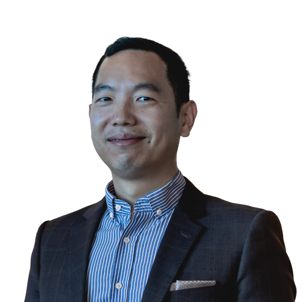
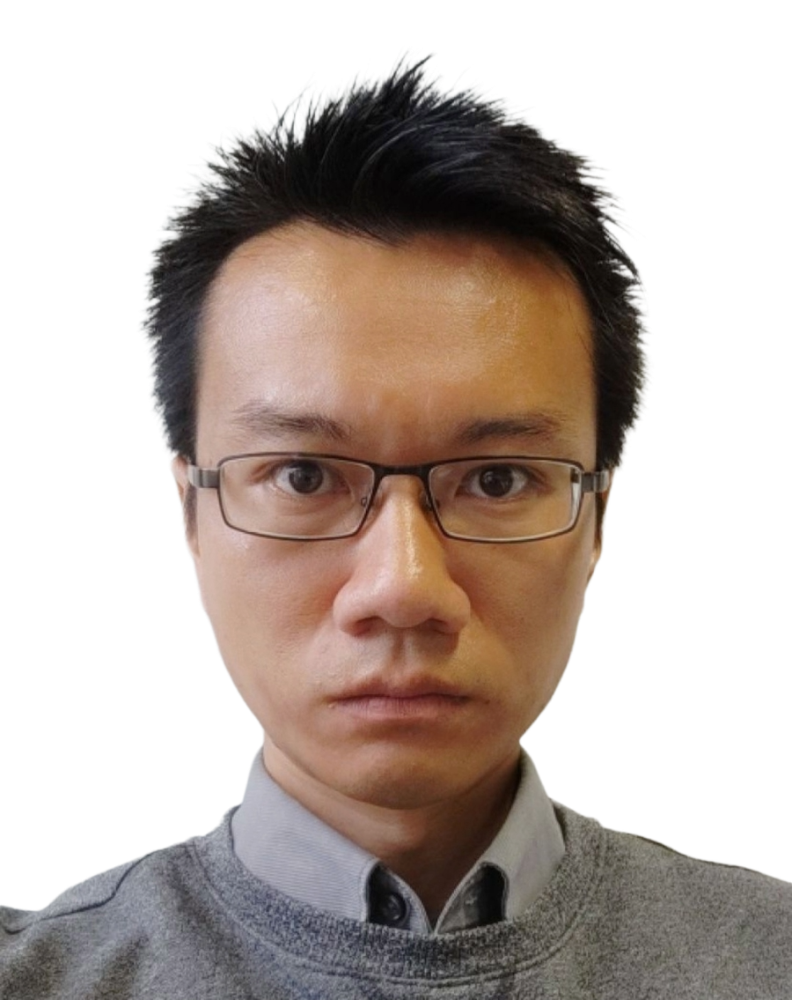
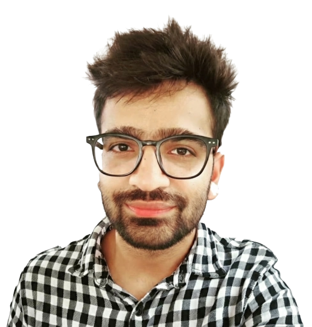
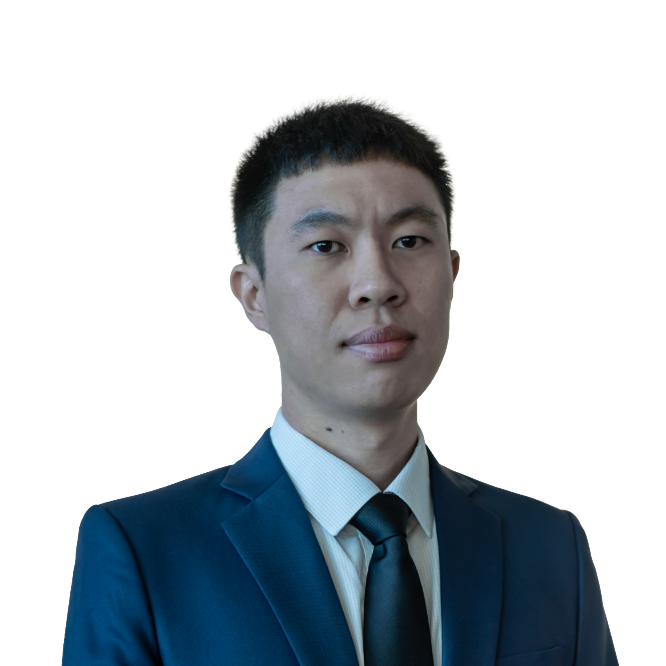

Who we are
Members
Soft living matter in the unit
PI

Dan Daniel
PI
Google Scholar ↗I was born in Indonesia but spent most of my formative years abroad: high school in Singapore, followed by undergraduate studies at Cambridge and doctoral training at Harvard. I then returned to Singapore as a group leader at IMRE before taking my first faculty position at KAUST in Saudi Arabia. I am now an assistant professor at OIST, Japan. My research centres on the physics of droplets, wetting and adhesion science, and soft matter, with a more recent focus on contact electrification.
I am fuelled by my love of droplets and coffee.
Current Members
Tomoko Yoshino
Unit Administrator
As a Research Unit Administrator, I support the smooth running of the unit through procurement, travel arrangements, record-keeping, and other administrative tasks, helping lab members focus on their research.
Born in Osaka, I now call the beautiful island of Okinawa home, where I enjoy its lush greenery and unique arts and crafts.

William Wong
Staff Scientist
Dr. William Wong is a Staff Scientist whose research focuses on interfacial engineering. His work aims to develop chemically benign strategies to control gas-liquid-solid interactions, targeting innovative multiphase engineering applications.
He has held research positions at Aalto University, the Max Planck Institute for Polymer Research, and the Australian National University. His research has been supported by competitive international fellowships and grants, including the Marie Skłodowska-Curie Actions and the Research Council of Finland.

Shivam Gupta
Post-doc
Homepage ↗I did my Bachelor of Science from Delhi University, India, then pursued my Master's and PhD in Physics from the Indian Institute of Technology Kanpur, India. I am interested in the fundamentals and applications of slippery lubricated surfaces — systems inspired by the slippery, insect-trapping surface of the Nepenthes pitcher plant — with a recent interest in contact electrification.
In my free time, I like to explore the world of AI, play cricket, and watch movies.
Nitish Singh
Post-doc
After graduating from IIT Kanpur, I joined Prof. Daniel's group as a visiting researcher, where I was introduced to the fascinating world of contact electrification at soft interfaces. I later continued with the group as a postdoctoral researcher. I enjoy chasing one of the simplest yet most intriguing questions in science: how do everyday surfaces become electrically charged?
Outside the lab, I enjoy exploring new cafés in search of good coffee, listening to classic English music, and unwinding with Rabindra Sangeet.

Marcus Lin
Visiting Professor
I am an Assistant Professor in the Department of Mechanical Engineering at The University of Tokyo. I received my Ph.D. from Nanyang Technological University (NTU), Singapore, before joining King Abdullah University of Science and Technology (KAUST) as a postdoctoral researcher in Prof. Dan Daniel's group.
My research focuses on fluid mechanics, soft matter, and interfacial phenomena, with a particular interest in the physics of droplets, wetting, and interfacial phenomena. At Okinawa Institute of Science and Technology (OIST), I look forward to collaborating with researchers on interdisciplinary problems in fluid dynamics and related fields.
I seem to have a habit of choosing institutions near the coast—not for the ocean views, but for the seafood.
Could this be you?
See open positionsFormer Members
- Marcus Lin (Postdoc) — now Assistant Professor, University of Tokyo.